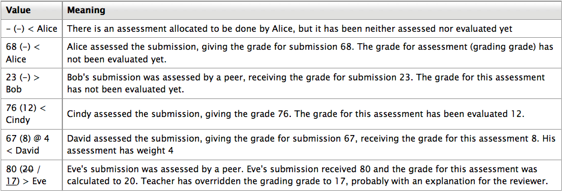

The work flow for the Workshop module can be viewed as having five phases. The typical workshop activity can cover days or even weeks. The teacher switches the activity from one phase to another (can be automated from 2.3).
The typical workshop follows a straight path from Setup to, Submission, Assessment, Grading/Evaluation, and ending with the Closed phased. However, an advanced recursive path is also possible.
The progress of the activity is visualized in so called Workshop planner tool. It displays all Workshop phases and highlights the current one. It also lists all the tasks the user has in the current phase with the information of whether the task is finished or not yet finished or even failed.
Setup phase
In this initial phase, Workshop participants cannot do anything (neither modify their submissions nor their assessments). Course facilitators use this phase to change workshop settings, modify the grading strategy or tweak assessment forms. You can switch to this phase any time you need to change the Workshop setting and prevent users from modifying their work.
Submission phase
In the submission phase, Workshop participants submit their work. Access control dates can be set so that even if the Workshop is in this phase, submitting is restricted to the given time frame only. Submission start date (and time), submission end date (and time) or both can be specified.
Assessment phase
If the Workshop uses peer assessment feature, this is the phase when Workshop participants assess the submissions allocated to them for the review. As in the submission phase, access can be controlled by specified date and time since when and/or until when the assessment is allowed.
Grading evaluation phase
The major task during this phase is to calculate the final grades for submissions and for assessments and provide feedback for authors and reviewers. Workshop participants cannot modify their submissions or their assessments in this phase any more. Course facilitators can manually override the calculated grades. Also, selected submissions can be set as published so they become available to all Workshop participants in the next phase.
Closed
Whenever the Workshop is being switched into this phase, the final grades calculated in the previous phase are pushed into the course Gradebook.This will result in the Workshop grades appearing in the Gradebook and in the workshop. Participants may view their submissions, their submission assessments and eventually other published submissions in this phase.
The grades for a Workshop activity are obtained gradually at several stages and then they are finalized. The following scheme illustrates the process and also provides the information in what database tables the grade values are stored.
As you can see, every participant gets two numerical grades into the course Gradebook. During the Grading evaluation phase, course facilitator can let Workshop module to calculate these final grades. Note that they are stored in Workshop module only until the activity is switched to the final (Closed) phase. Therefore it is pretty safe to play with grades unless you are happy with them and then close the Workshop and push the grades into the Gradebook. You can even switch the phase back, recalculate or override the grades and close the Workshop again so the grades are updated in the Gradebook again (should be noted that you can override the grades in the Gradebook, too).
During the grading evaluation, Workshop grades report provides you with a comprehensive overview of all individual grades. The report uses various symbols and syntax:
Grade for submission
The final grade for every submission is calculated as weighted mean of particular assessment grades given by all reviewers of this submission. The value is rounded to a number of decimal places set in the Workshop settings form.
Course facilitator can influence the grade for a given submission in two ways:
- by providing their own assessment, possibly with a higher weight than usual peer reviewers have
- by overriding the grade to a fixed value
Grade for assessment
Grade for assessment tries to estimate the quality of assessments that the participant gave to the peers. This grade (also known as grading grade) is calculated by the artificial intelligence hidden within the Workshop module as it tries to do typical teacher’s job.
During the grading evaluation phase, you use a Workshop subplugin to calculate grades for assessment. At the moment, only one standard subplugin is available called Comparison with the best assessment. The following text describes the method used by this subplugin.
Grades for assessment are displayed in the braces () in the Workshop grades report. The final grade for assessment is calculated as the average of particular grading grades.
There is not a single formula to describe the calculation. However the process is deterministic. Workshop picks one of the assessments as the best one - that is closest to the mean of all assessments - and gives it 100% grade. Then it measures a ‘distance’ of all other assessments from this best one and gives them the lower grade, the more different they are from the best (given that the best one represents a consensus of the majority of assessors). The parameter of the calculation is how strict we should be, that is how quickly the grades fall down if they differ from the best one.
If there are just two assessments per submission, Workshop can not decide which of them is ‘correct’. Imagine you have two reviewers - Alice and Bob. They both assess Cindy’s submission. Alice says it is a rubbish and Bob says it is excellent. There is no way how to decide who is right. So Workshop simply says - ok, you both are right and I will give you both 100% grade for this assessment. To prevent it, you have two options:
- Either you have to provide an additional assessment so the number of assessors (reviewers) is odd and workshop will be able to pick the best one. Typically, the teacher comes and provide their own assessment of the submission to judge it
- Or you may decide that you trust one of the reviewers more. For example you know that Alice is much better in assessing than Bob is. In that case, you can increase the weight of Alice’s assessment, let us say to “2” (instead of default “1”). For the purposes of calculation, Alice’s assessment will be considered as if there were two reviewers having the exactly same opinion and therefore it is likely to be picked as the best one.
It’s not final grades what is compared
It is very important to know that the grading evaluation subplugin Comparison with the best assessment does not compare the final grades. Regardless the grading strategy used, every filled assessment form can be seen as n-dimensional vector of normalized values. So the subplugin compares responses to all assessment form dimensions (criteria, assertions, ...). Then it calculates the distance of two assessments, using the variance statistics.
To demonstrate it on example, let us say you use grading strategy Number of errors to peer-assess research essays. This strategy uses a simple list of assertions and the reviewer (assessor) just checks if the given assertion is passed or failed. Let us say you define the assessment form using three criteria:
- Does the author state the goal of the research clearly? (yes/no)
- Is the research methodology described? (yes/no)
- Are references properly cited? (yes/no)
Let us say the author gets 100% grade if all criteria are passed (that is answered “yes” by the assessor), 75% if only two criteria are passed, 25% if only one criterion is passed and 0% if the reviewer gives ‘no’ for all three statements.
Now imagine the work by Daniel is assessed by three colleagues - Alice, Bob and Cindy. They all give individual responses to the criteria in order:
- Alice: yes / yes / no
- Bob: yes / yes / no
- Cindy: no / yes / yes
As you can see, they all gave 75% grade to the submission. But Alice and Bob agree in individual responses, too, while the responses in Cindy’s assessment are different. The evaluation method Comparison with the best assessment tries to imagine, how a hypothetical absolutely fair assessment would look like.
- Zeus 66% yes / 100% yes / 33% yes
Then we try to find those assessments that are closest to this theoretically objective assessment. We realize that Alice and Bob are the best ones and give 100% grade for assessment to them. Then we calculate how much far Cindy’s assessment is from the best one. As you can see, Cindy’s response matches the best one in only one criterion of the three so Cindy’s grade for assessment will not be as high.
The same logic applies to all other grading strategies, adequately. The conclusion is that the grade given by the best assessor does not need to be the one closest to the average as the assessment are compared at the level of individual responses, not the final grades.
When a workshop is used in a course using separate or visible groups and groupings, it is possible to filter by group in a drop-down menu at the Assessment phase, manual allocation page, grades report and so on.